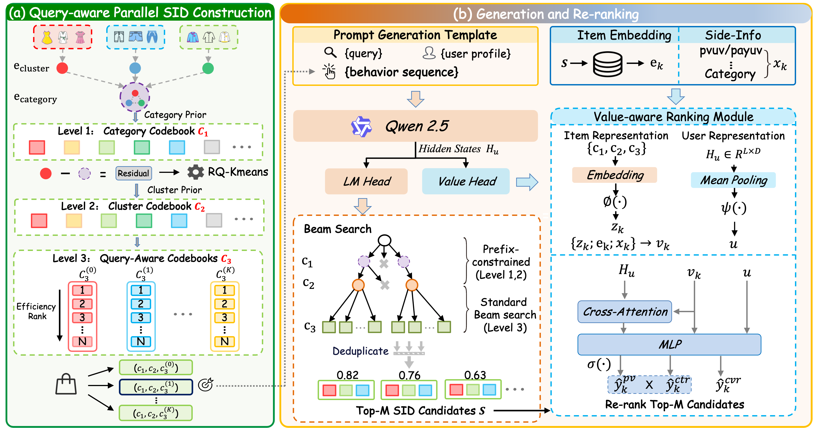
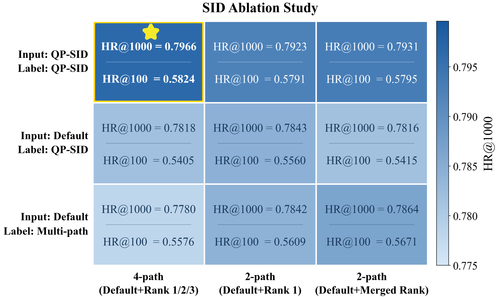
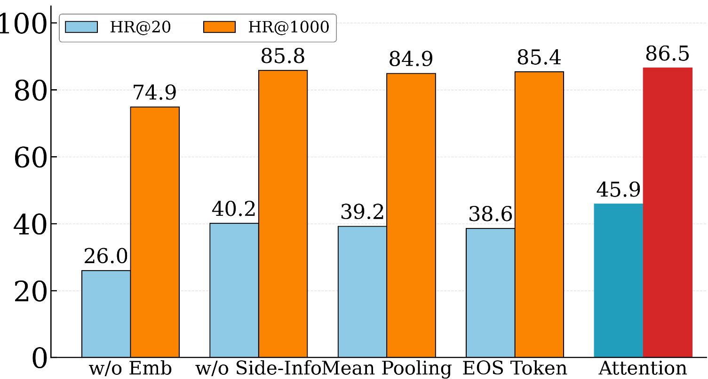
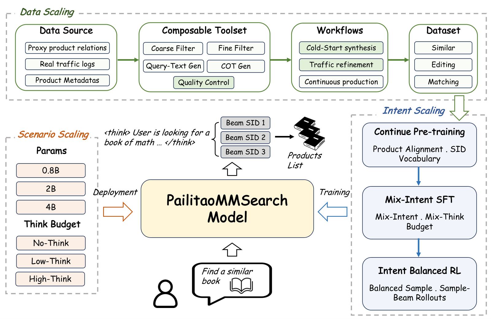
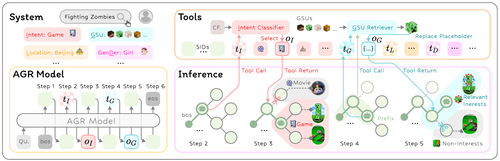
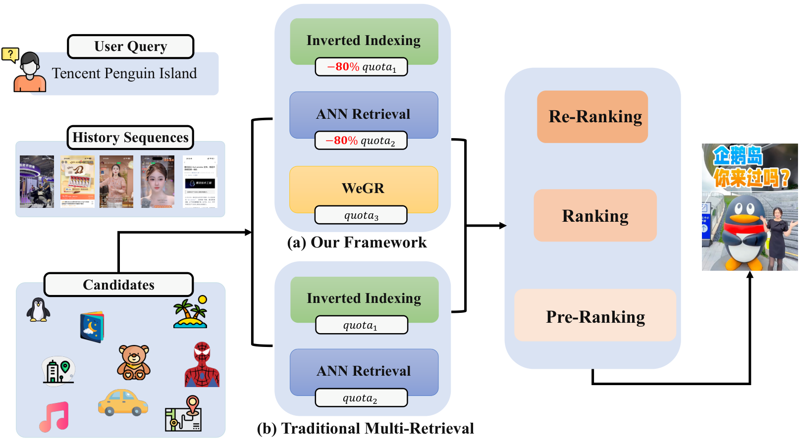
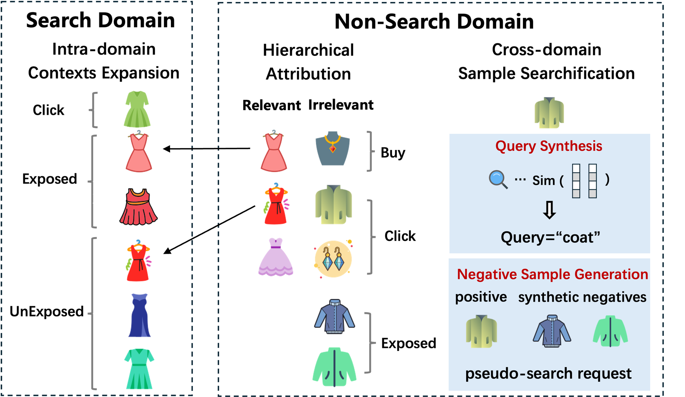

目录 · 9 节
1它到底在解决什么问题？2全景：一个模型同时做召回和粗排3第一部分：把价值编进 SID（QP-SID）4第二部分：同一个模型里的价值打分（VRM）5训练分两步：先学会说 SID，再学检索6实验结果说明了什么7我认为它的局限8一个电商搜索团队可以怎么试9结论和评价做电商搜索、正在试生成式召回的团队值得读。它回答的是生成式召回上线后很快会碰到的问题：模型按语义生成商品的 SID，可排序阶段看的是点击和成交，召回出来的东西“相关但卖不动”。TSGR（Taobao Search Generative Retrieval）是淘宝搜索的方案，核心思想一句话：在 SID 里按点击给商品排座次，让卖得好、又贴合当前 query 的商品拿到更容易被生成的编号；再在同一个模型上接一个打分模块，读商品特征给候选重排，让一个模型同时做召回和粗排。离线 HR@1000 从基线 FORGE（一种 SID 构建方法）的 0.7735 提到 0.8651（表 2）；在 1% 流量上跑了 38 天的 A/B，GMV +1.64%，成交笔数 +1.12%（第 4.4 节）。我认为它最有参考价值的是把“价值”拆成编码和打分两处分别处理，而且每一处都有消融；要留意的是重排模块抬高了前 1000 的命中，却压低了前 20 的命中，线上 A/B 的设置描述也前后不一。
它到底在解决什么问题？
生成式召回的做法是：训练一个自回归模型，输入 query 和用户信息，直接用 beam search 逐个生成候选商品的 SID。论文指出现有方案在两个地方看不到商品的商业价值。
第一处是 SID 本身。常见的 SID 按多模态 embedding 逐层聚类得到，只反映语义相近这一种关系。语义差不多、销量差很多的商品，会落进相同的 SID 邻域。而且每个商品只有一个全局 SID，不管用户搜什么，它的编号都一样。
第二处是候选的排序。beam search 按生成概率给候选排序，这个概率反映的是语义匹配，不是用户会不会点、会不会买。商品的销量、类目这些特征，要等候选生成出来才知道是哪个商品，生成时没法放进输入。
用论文附录 A.4 里的例子贯穿全文：手机壳这个聚类里，有的商品带磁吸，有的不带。用户搜“磁吸手机壳”时，我们希望带磁吸、卖得好的那几款排在前面。下面这张小表是示意：
| 商品（示意） | 近 30 天总点击 | 在“磁吸”这个词下的点击 | 默认排序名次 | “磁吸”排序名次 |
|---|---|---|---|---|
| 普通硅胶壳 A | 9000 | 50 | 1 | 3 |
| 磁吸壳 B | 6000 | 4000 | 2 | 1 |
| 磁吸壳 C | 3000 | 2500 | 3 | 2 |
只按总点击排，壳 A 第一；可对“磁吸手机壳”，B 和 C 才该优先生成。TSGR 想让编号能随 query 换一种排法。
全景：一个模型同时做召回和粗排

整个流程可以按下表理解：
| 阶段 | 输入 | 产出 |
|---|---|---|
| SID 构建（离线） | 商品 embedding、类目、同款聚类、近 30 天点击 | 每个商品一个三层 SID，第 3 层有 4 套排法 |
| 生成 | 用户画像、query、历史行为（行为也写成 SID） | beam search 得到候选 SID |
| 重排 | 生成时的隐藏状态、候选的 SID 和商品特征 | 每个候选一个价值分，按分数重排 |
| 训练 | Pre-SFT 多任务预训练，再做 SFT | 生成损失和打分损失一起优化 |
关键分工是：SID 负责让模型在生成时就偏向高价值商品，打分模块负责补上生成时看不到的商品特征。前者改的是生成概率本身，后者在生成之后再修正。生成用的骨干模型是 Qwen2.5-0.5B。下面拆开讲。
第一部分：把价值编进 SID（QP-SID）
前两层是语义码本，按“商品属于同款聚类、聚类属于类目”这个现成的层级来建。第 1 层直接用类目：淘宝有 8100 多个类目，和 8192 的码本大小接近，于是每个类目内商品 embedding 的平均值就是第 1 层的一个码。再用每个聚类的平均 embedding 减去所属类目的平均 embedding，对这个差值做 RQ-KMeans 学出后面的码本。第 3.1 节给出的结果是一个 8192×4×8192 的三层中间码本，第 1 层是类目，后两层来自残差量化，中间那层只有 4 个码，原文对它的含义只交代到这里。再加上下面的效率层，SID 就是四层，线上成本太高，所以作者把前两层合并成一层（8192×4=32768），最终 SID 是三层，码本大小 32768×8192×8192。因为量化的是聚类中心而不是单个商品，同一个聚类里的商品前缀一定相同。
第 3 层叫效率码本，在每个聚类内部按价值给商品排座次，名次就是第 3 层的编号。为什么排名靠前就有用？第 3 层的编号在所有聚类之间共用，靠前的编号几乎每个聚类都有商品占着，训练信号多，靠后的编号只有大聚类才用得到。举个示意例子：聚类甲有 3 个商品，聚类乙有 1000 个，编号 1 同时被两个聚类的头部商品使用，编号 900 只出现在聚类乙里。把卖得好的商品放到靠前的编号上，生成概率就和价值对齐了。最简单的排法是按近 30 天点击数排，记作默认排序 。
默认排序和 query 无关，QP-SID（Query-aware Parallel SID）补的是这一点。作者先把 query 切成关键词，统计每个词下各聚类里商品的点击。对每个聚类，按词和该聚类的共现点击数选出最有代表性的 3 个词，同时排除覆盖率超过 80% 的词。覆盖率是这个聚类里，在该词下被点过的商品占多少：
是商品 在词 下近 30 天的点击数。覆盖率接近 100% 的词，几乎和聚类里所有商品都沾边，区分不了谁更贴合这个意图，所以要去掉。每个留下的词按 再排一次，论文说这样得到 3 套按词的排序，加上默认排序，每个聚类共有 4 套并行的排法。
构造训练数据时，第 3 层编号由 query 和商品所在聚类一起决定。query 的关键词和该聚类的代表词有交集时，取交集里和这个聚类共现点击最多的那个词 ，用它的排序给编号；没有交集就用默认排序：
回到示意表：用户搜“磁吸手机壳”，命中手机壳聚类的代表词“磁吸”，磁吸壳 B 的第 3 层编号就是 1；用户只搜“手机壳”，没有命中，编号用默认排序，普通壳 A 是 1。同一个商品在不同 query 下有不同的 SID，模型学到的是“这个 query 下谁该排前面”。线上解码（第 4.4 节）是这样写的：前两层在一棵预先建好的前缀树约束下解码，只允许生成真实存在的前缀；第 3 层做普通 beam search，得到完整的 SID，然后交给打分模块。按第 3.1 节的构造，前缀对应聚类，第 3 层编号是这个聚类在某套排序里的名次，而用哪套排序由 query 命中哪个代表词决定（命中多个时取共现点击最多的那个）。从 SID 还原到具体商品，还有两个细节要自己补上。一是唯一性：作者只保证同一聚类的商品共享同一个前缀，并说两种先验给出了“干净的聚类划分”，附录 A.4 里手机壳聚类也直接写作 Cluster (140, 3504)。但论文没说不同聚类的语义前缀是否一定不同，也没说两个聚类前缀碰撞时怎样确定聚类、还原商品。二是越界：第 3 层不受前缀树约束，论文没说生成的第 3 层名次超过这个聚类的商品数时怎样处理这个 SID。复现时，前者可以离线检查前缀是否一一对应聚类，后者可以给第 3 层也加上按聚类大小的约束。论文附录 A.4 的真实例子里，“磁吸”这个词下的排序确实把标题带磁吸的商品提到了前面。
第二部分：同一个模型里的价值打分（VRM）
为什么还需要打分模块？SID 只能把点击统计压进一个编号，商品的细粒度特征进不来；beam search 的排序也还是生成概率。常规做法是在召回后面接独立的粗排模型，作者认为这样两边的目标和数据分布都对不上：粗排模型给所有召回通道的候选打分，并不了解生成模型自己召回的分布。
VRM（Value-aware Ranking Module）直接长在生成模型上，四个部件各管一件事：
- 商品表示：每个 beam search 候选拼三样东西。一是离线特征表里的商品特征，如多个时间窗口的浏览和成交统计、类目和店铺特征、query 和商品的共现特征；二是商品 embedding，补回 SID 构建时丢掉的信息；三是候选的三个 SID token 过骨干的 embedding 层再用 MLP 压缩。
- 用户表示：直接复用生成时骨干模型在整段输入上的隐藏状态，对所有位置做平均，再过一个 MLP，不用额外编码。
- 用户和商品的交互：一层 cross-attention，用商品表示去查询输入里每个位置的隐藏状态，让每个候选从用户上下文里取和自己最相关的部分。
- 打分：交互结果、用户表示、商品表示拼起来，送进三个并行的头，每个头经 sigmoid 输出一个 0 到 1 的分数，分别是 PV、CTR、CVR。推理时按 PV×CTR 两个分数的乘积重排。
举个示意的手算：候选 B 的 PV 分数 0.8、CTR 分数 0.10，乘积 0.08；候选 A 的 PV 分数 0.9、CTR 分数 0.05，乘积 0.045。哪怕 A 的生成概率更高，重排后 B 也会排到 A 前面。
训练时，VRM 和生成一起优化。总损失是生成损失加 倍的打分损失，：
打分损失是 PV、CTR、CVR 三个 BCE 的和，按公式 (14)，它和生成损失定义在同一个集合上，即会话里成交、点击、浏览过的商品，每个商品对 PV、CTR、CVR 各有一个标签。论文没有说明这三个标签的正负怎样赋值：按公式未浏览的商品不进损失，PV 任务的负例从哪里来就不清楚。为什么选 PV×CTR 而不是三者相乘？作者在 5000 个候选的池子上比较了各种组合（表 10），PV×CTR 和三者相乘的 HR@1000 几乎一样（0.8651 对 0.8650），HR@20 前者更高，说明再乘上 CVR 对召回没有帮助。作者的解释是 HR 衡量的就是用户有没有浏览或点击，PV×CTR 正好对应这个目标。
训练分两步：先学会说 SID，再学检索
预训练好的大模型不会把商品或 query 映射成 SID。作者先做 Pre-SFT，把目标拆成 5 个简单任务混在一起训练（表 1），例如由商品标题生成 SID、只给 query 生成 SID、给一个商品预测“买过它的人还买过的”商品的 SID。图 6 显示每个任务单独加都有正收益，检索任务最大，生成标题的任务最小，5 个任务一起训练，HR@1000 比只做编码任务的 67.77% 高 5.76 个百分点。
SFT 阶段是正式的个性化检索。一个搜索会话里，成交、点击、浏览过的商品都作为标签放进同一条训练样本，第 3.3 节只交代了标签之间加 attention mask，防止它们互相干扰。生成损失给不同行为不同权重，成交、点击、浏览的权重是 3、2、1。表 5 比较了这个做法和逐个商品单独训练：HR@1000 从 0.7714 提到 0.7922，说明告诉模型“成交比浏览重要”对召回确实有用。
作者还搭了一套 GRPO 强化学习，用线上排序模型的 CTR×CVR 做奖励。附录表 8 里各项强化学习改进全部加上，HR@1000 也只从不用强化学习的 0.8111 提到 0.8163，提升太小，所以没上线。同样是想引入业务目标，把商品特征直接放进打分模块，比用强化学习调生成概率划算得多。
实验结果说明了什么
离线数据是淘宝搜索两周内超过 2 亿次真实交互，测试集取下一天，主指标是 HR@1000。基线有两个：FORGE（一个淘宝上的 SID 构建方法，第 3 层随机分配，每个 SID 最多对应 5 个商品）和一个常规粗排模型。表 2 分三组：SID 构建、前处理、后处理，同一组内的方法互斥，带 † 的是 TSGR 最终采用的。正文给粗排模型和 RL 的提升正好等于它们和 Pre-SFT 一行的差，可见后处理三行都在 QP-SID 加 Pre-SFT 之上比较：
| 方法 | HR@20 | HR@100 | HR@500 | HR@1000 | HR@5000 |
|---|---|---|---|---|---|
| FORGE | 0.4328 | 0.5863 | 0.7207 | 0.7735 | 0.8604 |
| QP-SID † | 0.4635 | 0.6235 | 0.7669 | 0.8177 | 0.8961 |
| Pre-SFT †（前处理） | 0.4694 | 0.6340 | 0.7740 | 0.8222 | 0.8987 |
| 粗排模型（后处理） | 0.4248 | 0.6264 | 0.8112 | 0.8552 | 0.8771 |
| RL（后处理） | 0.4659 | 0.6420 | 0.7857 | 0.8277 | 0.9027 |
| VRM †（后处理，TSGR） | 0.4586 | 0.6677 | 0.8250 | 0.8651 | 0.8953 |
QP-SID 换掉 FORGE，HR@1000 从 0.7735 到 0.8177，每个 K 都更好，说明 SID 编进价值和 query 后，生成本身就更容易命中用户会点的商品。在后处理里，独立粗排模型把 HR@1000 拉到 0.8552，但 HR@20 掉到 0.4248、HR@5000 也降了；VRM 的 HR@1000 更高，HR@20 也比粗排模型好得多。这说明联合训练的打分模块比外接的粗排模型更稳。

QP-SID 的最终形态是试出来的（图 3）。输入里的历史行为也要按当前 query 用 QP-SID 编号，和标签保持一致（表 4 显示历史商品大多和当前 query 不沾边，落在默认排序）：如果输入用默认编号、标签用 QP-SID，4 套排法下 HR@100 从 0.5824 掉到 0.5405，作者的解释是模型没法直接照抄输入里出现过的 SID。另一种做法是给一个商品同时挂多个编号当标签，结果 99.8% 的输出都退回默认那一套，多套排法形同虚设。最终方案下，表 4 里训练标签有 76.8% 落在命中代表词的排序上，模型输出里只有 32.05% 落在默认排序。要注意，用哪套排序是由 query 按规则定的，模型并不生成排序标识；作者据此得出的结论是，模型学会了从多套排序里召回商品，而不是只走默认那一套。这个输出比例按什么口径统计，原文没有展开。

VRM 的结构消融见图 5 和表 10。去掉商品 embedding，HR@1000 从 0.8651 掉到 0.7487，是所有变体里最差的，因为 SID 构建丢掉了大量商品信息。去掉商品特征，HR@1000 只降到 0.8580，可 HR@20 从 0.4586 降到 0.4116，说明这些特征主要影响最前面几位的排序。把 cross-attention 换成平均池化或 EOS 位置的隐藏状态，HR@1000 只少不到 2 个点，HR@20 却少 6 到 7 个点。
线上部署时，前两层 SID 用预先建好的前缀树限制只生成存在的组合，第 3 层是普通 beam search，每生成一个候选就由 VRM 打分，前 1500 个候选跳过粗排直接送进精排，延迟预算 65ms。在 1% 流量上跑了 38 天，GMV +1.64%，商品详情页浏览 +0.43%，作者说统计显著，之后已全量上线。这意味着收益主要来自成交端，浏览量的变化小得多。
我认为它的局限
第一，重排压低了最靠前的命中。表 10 里，同一个模型不重排时 HR@20 是 0.4754，按 PV×CTR 重排后是 0.4586，表 2 里加 VRM 之后 HR@20 也低于 Pre-SFT。这说明 VRM 的收益集中在前 500 到前 1000 这一段。TSGR 的输出直接进精排，前 1000 的覆盖可能比前 20 更重要，但如果召回之后还要截断到很少的条数，这个取舍要重新算。
第二，离线对比面窄，还有对不上的数字。基线只有 FORGE 和一个粗排模型，没有和其他生成式召回方案或双塔召回比。按同样的算法，VRM 的 HR@1000 提升应是 4.29 个点，正文却写 +3.73%。在公开的 TencentGR-10M 数据上，VRM 的 HR@500 只从 0.0786 到 0.0794（表 9），所以泛化证据很弱。
第三，线上 A/B 的设置描述前后不一致，成本也没有数字。第 4.4 节先说 TSGR 作为一路额外的召回通道上线，同一节又说实验组用一个模型替换了原有的召回和粗排。两种设置下 GMV +1.64% 的含义很不一样。VRM“几乎不增加延迟”的说法也没有给出延迟或 GPU 用量的数字，只给了 65ms 的预算。
一个电商搜索团队可以怎么试
- 先只改 SID 的最后一层。在现有聚类 SID 下，按近 30 天点击给聚类内商品排座次，替换随机或语义的最后一层编号，看 HR@1000 的变化。这一步不改模型结构。表 2 里 0.7735 到 0.8177 是完整 QP-SID 替换 FORGE 的收益，还包括按 query 的排序和语义码本的改造，只改最后一层能拿到多少，表 2 推不出来。
- 再加 query 相关的排法。从 query 和商品的点击日志里给每个聚类挑几个代表词，记得去掉覆盖率过高的词，并让输入里的历史行为和标签用同一套编号。判断标准是模型输出里非默认排序的比例是否明显大于零。
- 有了稳定的生成式召回，再在骨干上接打分模块，商品 embedding 一定要放进去。上线前同时看 HR@20 和 HR@1000，确认前排命中下降在可接受范围内。
结论和评价
最关键的启发是：生成式召回要和业务目标对齐，可以从两头下手，在编码里给高价值商品更好的位置，在生成之后用同一个模型读商品特征重排，两步都比事后加强化学习有效。
| 维度 | 评价 |
|---|---|
| 问题重要性 | 高。生成式召回进入工业搜索后，召回结果和排序目标不一致是普遍问题 |
| 方法创新性 | 中高。按价值排第 3 层编号、按 query 切换排法是新做法；打分模块的结构本身比较常规 |
| 实验证据 | 中。有大规模离线数据、逐项消融和 38 天线上 A/B；但基线少，正文和表格的数字有一处对不上，线上设置描述不一致 |
| 工程成本 | 中高。需要同款聚类、类目体系、query 关键词切分和点击统计，0.5B 模型加 GPU 部署，65ms 预算 |
| 是否值得尝试 | 值得，可以从第 3 层按价值排座次开始，这一步成本最低；QP-SID 整体是论文里收益最明显的一项 |
读完这篇，你觉得
夜读鸮记下了，谢谢你的反馈。
点一下即可，无需登录；再点一次撤回。只统计匿名次数，不记录你是谁。
相关论文RELATED

Generative · 2026-10-29PailitaoMMSearch2.0 Technical Report: Scaling Generative Retrieval to Unified End-to-End Multimodal Search淘宝拍立淘里，用户拍一件衬衫再说「找条配它的短裤」，要的是搭配而不是同款。传统做法先分意图、再分发到不同召回通道，任何一步分错后面全错。阿里这篇技术报告让一个 2B 视觉语言模型直接读原图和原话，生成商品的 Semantic ID，不需要意图标签。优秀率指前 10 个结果里被评审模型判满分的比例。「找搭配」请求的这一指标从多路召回链路的 44.2% 提到 74.3%，线上 GMV 提升 8.94%，已全量上线。 Generative · 2026-10-28SLIDE: Search-to-List Item Distillation for Single-Rollout Generative Retrieval生成式召回线上通常用束搜索出候选，各条束互不可见；想让模型一口气写出整张列表，最直接的贪心解码效果却差得多。淘宝的 SLIDE（一种把离线搜索结果蒸馏成列表的训练方法）把搜索挪到离线：教师对每个训练请求跑束搜索，把搜出的商品按得分拼成一条长序列，学生照着学，线上只贪心解码一遍。它把线上的搜索成本换成了离线的标注成本。教师用 7B 时，0.5B 学生的 HR@10 达到 0.4578，反超同尺寸模型束搜索的 0.4498。
Generative · 2026-10-28SLIDE: Search-to-List Item Distillation for Single-Rollout Generative Retrieval生成式召回线上通常用束搜索出候选，各条束互不可见；想让模型一口气写出整张列表，最直接的贪心解码效果却差得多。淘宝的 SLIDE（一种把离线搜索结果蒸馏成列表的训练方法）把搜索挪到离线：教师对每个训练请求跑束搜索，把搜出的商品按得分拼成一条长序列，学生照着学，线上只贪心解码一遍。它把线上的搜索成本换成了离线的标注成本。教师用 7B 时，0.5B 学生的 HR@10 达到 0.4578，反超同尺寸模型束搜索的 0.4498。
Generative · 2026-10-21AGR: Agentic Generative Retrieval with Tool-Augmented Search生成式检索不必把全部特征一次塞进模型。AGR 在生成物品短编码时，按当前分支调用意图、位置或历史行为工具，把结果压成观察标记继续解码。快手线上实验中，强相关前四结果请求占比提升 0.205%。
Generative · 2026-10-15WeGR: Unified Generative Retrieval for Industrial Search Systems in WeChatWeGR 将协同行为感知的 CoCo-VAE 语义码与动态视野策略优化 DHPO 结合，解决工业生成检索中的码本塌缩及精确匹配奖励稀疏问题。微信电商搜索线上实验报告订单、CTR、CVR 相对提升 2.539%、1.508%、1.381%，CPU/GPU 使用量分别减少 25.5%/26.1%；这些是电商生产结果，尚非社区 UGC 验证。
Generative · 2026-03-27UniScale: Synergistic Entire Space Data and Model Scaling for Search Ranking淘宝搜索想把排序模型做大，发现瓶颈在数据：他们把未曝光候选和推荐、店铺里的行为改造成搜索样本，训练数据扩到 5 倍，再配一个按场景隔离梯度的 Transformer。同样的扩充数据放到旧结构上 AUC 反而下降 0.43%，放到新结构上提升 0.32%。线上 A/B 购买提升 1.70%，但结构、数据和工程优化一起上，线上没有拆开各自的贡献。跨场景数据不能直接混进去训，必须配上能隔离场景的结构。 Generative · 2026-10-29KL-MOPD: Discrepancy-Aware Multi-Objective On-Policy Distillation for Generative Recommendation把点击老师和价值老师一起蒸馏进生成式推荐时，每个 token 平分权重并不公平：在 TencentGR 上，学生生成第 1 个 token 时离价值老师的 KL 是离点击老师的 3.13 倍，而且难学的老师在后两个 token 换成了点击老师。浙大和阿里的 KL-MOPD 在训练前算一次学生离两个老师的距离，每个 token 上离得更远的老师拿更大的权重，训练时没有额外开销。线上 A/B 中，广告收入提升 1.63%，说明点击和价值两个目标一起涨了。
Generative · 2026-10-29KL-MOPD: Discrepancy-Aware Multi-Objective On-Policy Distillation for Generative Recommendation把点击老师和价值老师一起蒸馏进生成式推荐时，每个 token 平分权重并不公平：在 TencentGR 上，学生生成第 1 个 token 时离价值老师的 KL 是离点击老师的 3.13 倍，而且难学的老师在后两个 token 换成了点击老师。浙大和阿里的 KL-MOPD 在训练前算一次学生离两个老师的距离，每个 token 上离得更远的老师拿更大的权重，训练时没有额外开销。线上 A/B 中，广告收入提升 1.63%，说明点击和价值两个目标一起涨了。
讨论
欢迎补充实验细节、复现经验或不同看法。需 GitHub 登录。
正在加载讨论…